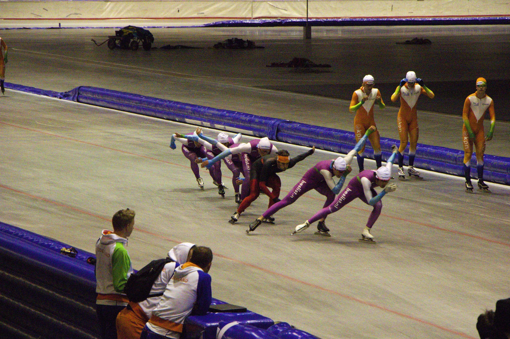

Vantage Practice
Bachelor Eindproject
H.J. Banken, P.A. van Hesteren, H.T.D. Visser
25 juni 2014Waarom dit project?
- Trainingsdata kan waardevolle inzichten opleveren
- Vooralsnog alleen beschikbaar voor topsporters
- Momenteel zijn beperkte analyses mogelijk, maar altijd achteraf
Opdrachtgever Emando B.V.
- Projectbureau voor maatwerksoftware
- Actief in sportsector
- Ontwikkelt nieuwe wedstrijdsystemen voor schaatsen:
Vantage- Tijdregistratie
- Wedstrijd-administratie
- Presentatie van uitslagen
Oplossingen
Strava
RunKeeper
MyLaps Practice
MyLaps Practice App
CoachWatch

Transponders en detectielussen
Vantage Practice
- Maakt gebruik van bestaande Vantage architectuur
- Sport-agnostisch
- Cross-platform
Functionaliteiten van de App
- Overzicht van eerdere trainingen
- Gedetailleerd trainingsoverzicht
- Groepen maken en sporters volgen
- Leaderboards
- Realtime
Realtime
- Realtime dataverwerking
- Direct doorgestuurd naar App
- Alle modellen en controllers zijn "Reactive"
Skate Lap
Reactive Laps
Herman Banken
30.00
Inzicht in trainingen
Groepen, favorieten en leaderboards

Implementatie Backend
DataCollector: Verzameling van gegevens vanuit MyLaps
Service Bus: Communicatie tussen processen
Aggregatie: Analyse en verwerking van gegevens
Practice DB: Opslag van gegevens
DataCollector
- Verbinding met MyLaps Server
- Één Cloud proces per baan
- Data wordt opgeslagen in Database
- Plaatst berichten op Wachtrij
Implementatie Backend
DataCollector: Verzameling van gegevens vanuit MyLaps
Service Bus: Communicatie tussen processen
Aggregatie: Analyse en verwerking van gegevens
Practice DB: Opslag van gegevens
Aggregatie
- Haalt berichten van Wachtrij
- Aantal Cloud processen is afhankelijk van belasting
- Parallelle dataverwerking
- Verstuurt gegevens naar App
- Ondersteunt verwerking met terugwerkende kracht
Enquête 30 schaatsers
- Interesse voor andere baansporten
Atletiek, wielrennen - Audio-cue is een gewenste functionaliteit
70% of meer - Veel Android gebruikers (70%)
- Mensen zijn bereid geld te betalen voor de App
€1 - €2 - Integratie met GPS, hartslagmeters, calorieënverbruik en trainingsschema’s
Gebruikerstest 14 schaatsers
- Live test in Thialf, Heerenveen (18 juni)
- Tijdens topsport-uur getest met Activia-ploeg
- Later getest met recreanten
- Applicatie werd bijzonder goed ontvangen
Toekomst
- Applicatie heeft veel potentie
- Applicatie is een toevoeging op de bestaande markt
- Veel doorontwikkelmogelijkheden
- Emando en KNSB zijn in overleg over doorontwikkeling applicatie
- Uitbreiden functionaliteit bestaande applicatie
- KNSB laat applicatie ontwikkelen met bestaande
back-end